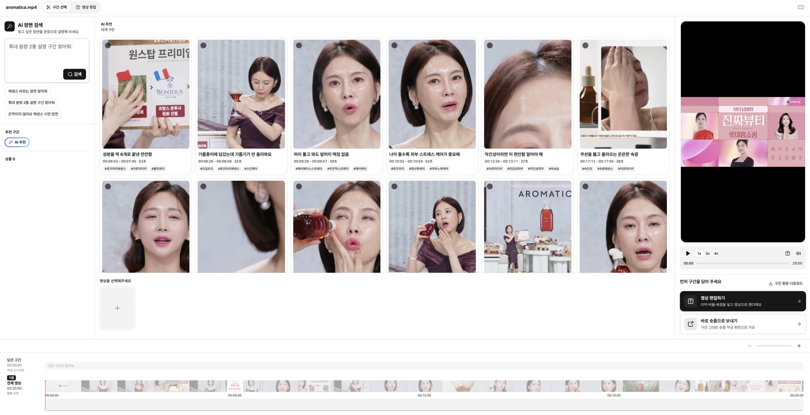
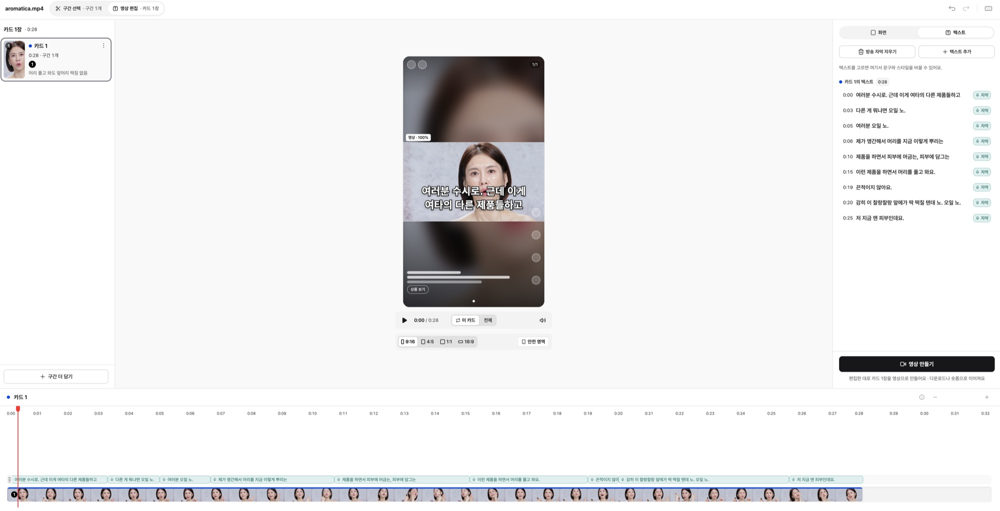
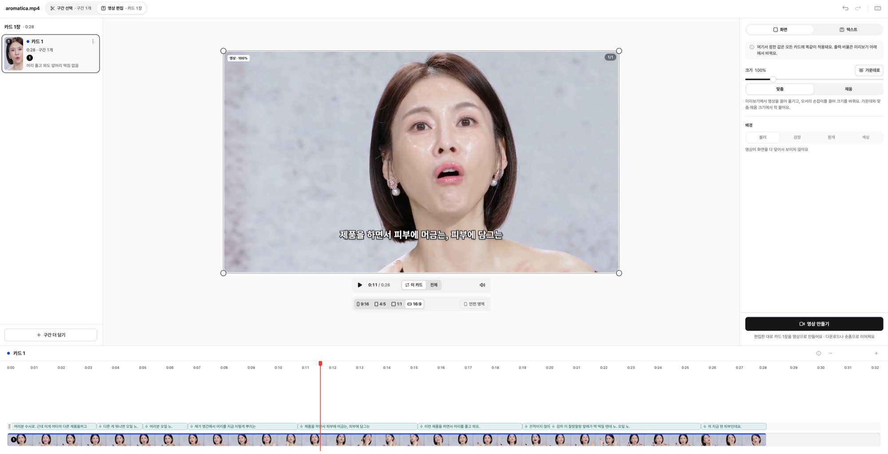

현행 제작 프로세스는 그대로 유지하고, 방송 한 편으로 숏폼 3~5편을 자동 제작합니다.
방송별 3편씩 생성했습니다. 그다음 순위 후보와, 가격 · 할인 · 재고처럼 방송 중에만 유효한 정보나 자료영상 · 판넬이 화면을 덮어 뺀 후보는 숏폼 아래에 이유와 함께 적었습니다. 모든 샘플은 크롭 · 얼굴 트래킹 화면 구성으로 만들었습니다. 원본 타임라인의 색 구간이 각 숏폼에 쓰인 장면입니다. 구간이나 자막 줄을 누르면 해당 위치로 이동합니다. 아로마티카 에센스, 박준면의 김치이야기 순서로 이어집니다.
같은 숏폼을 화면 구성 옵션만 바꿔 렌더했습니다. 위 샘플 6편은 모두 크롭 · 얼굴 트래킹으로 만든 것입니다. 고객사별 기본값으로 저장해 두고 요청마다 바꿀 수도 있습니다. 숏폼마다 8개 화면을 함께 맞춰 재생할 수 있습니다.
얼굴을 검출해 크롭 창이 진행자 얼굴 전체를 담도록 맞춥니다.
2초가 안 되는 전환 효과·그래픽 화면에서는 크롭 위치를 바꾸지 않습니다.
대상이 0.75초 넘게 잘릴 때만 부드럽게 따라가고, 장면이 바뀌면 바로 자릅니다.
흰 · 검정 배경은 예시입니다. 배경색은 컬러 팔레트에서 원하는 색으로 고를 수 있고, 자막 글자색과 자막 박스 색도 함께 정합니다 (자막 스타일).
상품 설명 판넬이나 가격 그래픽이 화면 가장자리에 있는 방송은 원본 전체를 담는 블러 · 단색 배경 구성으로 만들면 잘리지 않습니다. 방송 유형별로 기본 구성을 다르게 둘 수 있습니다.
같은 엔진으로 방송 분위기에 맞춰 서로 다른 자막 스타일을 입힐 수 있습니다. 고객사 기본값으로 저장해 두고 요청마다 바꿀 수 있습니다.
자막은 발화 단위 SRT 파일로도 함께 전달합니다.
자막은 방송 발화를 그대로 받아 적습니다. 상품명 · 브랜드명 · 출연자 이름은 STT vocabulary로 등록해 음성 인식 단계에서부터 정확히 받아 적습니다.
자동 생성 결과를 그대로 쓰지 않고 다듬고 싶을 때는 Shoplive 어드민의 Clip Maker 에디터에서 구간 · 자막 · 화면 구성을 수정할 수 있습니다. 별도 편집 프로그램 없이 브라우저에서 미세 조정을 하고 다시 렌더합니다.
AI가 추천한 구간 목록에서 쓸 구간을 고르거나, 왼쪽 AI 장면 검색에 「기름종이 시연구간으로 찾아줘」처럼 찾고 싶은 장면을 문장으로 입력합니다. 아래 타임라인에서 방송 전체를 훑어보고, 구간의 시작 · 끝을 끌어 길이를 맞춥니다.

음성 인식 자막이 오른쪽에 시간순으로 깔려 있습니다. 문구를 고치거나 지우고, 강조 문구를 새로 넣습니다. 글자 크기 · 색 · 위치는 자막 하나만 또는 전체에 한 번에 적용하고, 타임라인에서 자막 블록을 끌어 시각을 맞춥니다.

원본 영상의 크기와 위치를 미리보기에서 끌어 맞추고, 출력 비율(9:16 · 4:5 · 1:1 · 16:9)과 배경(블러 · 검정 · 흰색 · 색상)을 고릅니다. 고친 내용은 숏폼의 모든 장면에 똑같이 적용됩니다.

편집을 마치면 「영상 만들기」로 다시 렌더해 내려받습니다. 되돌리기 · 다시하기를 지원하므로 여러 번 고쳐 봐도 원본은 그대로입니다. 화면은 위 샘플과 같은 아로마티카 에센스 방송을 Clip Maker 에디터에서 캡처한 것입니다.
롯데홈쇼핑의 현재 송수신 절차를 바꾸지 않고 연동합니다. 아래 연동부(SQS 수신 · S3 저장 · SNS 발행)는 계약 후 구축합니다. 원본과 request.json을 받는 쪽, 결과와 메타데이터를 돌려주는 쪽 모두 지금과 같은 S3 저장 + SNS 메시지 방식입니다. 결과를 저장할 버킷은 현행 방식에 맞춥니다. 롯데홈쇼핑 버킷에 직접 쓰는 방식(교차 계정 쓰기 권한)과 Shoplive 버킷에서 가져가는 방식 모두 지원합니다.
20분 방송 영상 + request.json (상품·브랜드·카테고리)
SHORTFORM_CREATE_REQUEST 메시지
SQS 구독 → STT · 화면 분석 → 구간 선정 → 렌더
숏폼 mp4 · 썸네일 · SRT · result.json
저장 완료 메시지 → 롯데홈쇼핑 결과 확인 · 수신
연동을 구축하면 방송 1건마다 result.json 1개를 숏폼 파일과 함께 저장합니다. 정해진 포맷이 없어 쓸 수 있는 정보를 모두 담았고, 롯데홈쇼핑 포맷이 정해지면 그대로 맞춥니다.
오류 재처리, 데이터 보안, 대체 연동 방식입니다.
| 중복 요청 | 같은 원본·같은 요청은 진행 중인 작업으로 합칩니다. SNS 중복 전달에도 두 번 만들지 않습니다. |
| 재처리 | 작업이 중단되면(배포·장애) 다른 워커가 이어받아 다시 만듭니다. 실패한 숏폼만 골라 다시 렌더합니다. |
| 데이터 보안 | 버킷 간 교차 계정 IAM 역할 · 최소 권한, 전송 구간 TLS, 원본은 처리 후 보관 기간 정책에 따라 삭제합니다. |
| API 연동 | S3·SNS 대신 REST API(생성 요청 → 상태 조회)로도 연동할 수 있습니다. 이 페이지의 샘플이 그 API로 만든 결과입니다. |
숏폼마다 AI 평가를 붙여 기준 미달을 걸러내고, 방송이 끝나면 의미가 없어지는 정보는 AI 심사에서 감점해 걸러냅니다. 제공 중 은 지금 자동 생성 API에 들어 있는 기능, 고도화 가능 은 롯데홈쇼핑 심의 기준을 받아 고도화할 항목입니다. 두 가지가 섞인 카드는 항목마다 표시했습니다.